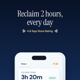

Nicole Kelner
Product builder and content creator
I took two iOS apps from zero to one on my own, concept to App Store, and instrumented both end-to-end in Mixpanel, running onboarding conversion experiments to find the flow that turns installs into paying users. Before that, nine years of product work as a cofounder, COO, and chief of staff, scaling new and existing products, including a K-12 education company I helped grow from one location to five nationwide, 1,000 students, and $1M in revenue before it was acquired.
Prepared for the Product Manager, Podcast role at Spotify.
Nicole's 2026 Resume Wrapped
I like building products for mission-driven organizations. I've done it on open-source projects, as an indie developer, and as part of a founding team.
Things I took from zero to one

Free Time →iOS · Live on the App Store · 4.8 stars · Nov 2025 – Present. Owned the onboarding funnel end to end. Flip Phone OS →iOS · In beta, launching 2026. A 24-screen onboarding, iterated to v12 before a line of production code.
Flip Phone OS →iOS · In beta, launching 2026. A 24-screen onboarding, iterated to v12 before a line of production code. So You Want to Work in Climate →Open-source database · 25,000 views in first six months. Contributors and audience are the same people.
So You Want to Work in Climate →Open-source database · 25,000 views in first six months. Contributors and audience are the same people. The Coding Space →K-12 education company + WoofJS, an open-source IDE · 1 location to 5, $1M revenue, acquired.
The Coding Space →K-12 education company + WoofJS, an open-source IDE · 1 location to 5, $1M revenue, acquired.
What I was called
- Founder and Product OwnerFree Time · Flip Phone OS
- Cofounder and COOThe Coding Space, then Head of Marketing
- Head of OperationsDashboard.Earth
- Founder and Product LeadSo You Want to Work in Climate
- CEO and FounderSmartPurse, acquired by Betabrand
On repeat all year
- Top-of-funnel and onboarding ownershipConversion experiments, activation and retention metrics
- End-to-end product instrumentationFeature-level behavior analysis, revenue and subscription analytics
- 0 to 1 iOS product ownershipApp Store launch and release management, beta programs
- In-product education and user activationCommunity building, direct-to-audience sales
- Prioritization and sequencingRoadmapping, OKRs, specs and acceptance criteria
The year in figures
- 55,000 followersArts and Climate Change, my studio. Grown from zero, reaching more than 3 million people.
- $1M in revenueThe Coding Space, the K-12 company I cofounded. One location to five, 1,000 students, then acquired.
- 250,000 impressionsMy illustrated guide to the Inflation Reduction Act, adopted by local governments as their explainer for residents.
- $1.6M budgetDashboard.Earth, where I was Head of Operations. Rockefeller Foundation funded, delivered on milestones.
- 1,000+ downloadsFree Time, my iOS app. Paying subscribers and 4.8 stars, with no paid marketing.
Most minutes logged
- MixpanelInstrumented both apps end to end
- RevenueCatSubscription state, joined to activation in one dashboard
- App Store ConnectLaunch, release management, per-channel acquisition
- Xcode & Claude CodeWhere the two apps actually got built
- Figma, Notion, ProcreateSpecs, databases, and the illustrations
The Instrumentalist
You take products from zero to one by yourself, then instrument them end to end so you can find where people are quietly giving up. You have strong instincts. You don't trust them until something is measuring.
Why this role
The Podcast team is hiring someone to own how creators first experience Spotify and figure out what it's worth to them. That's the problem I've spent the last decade on, from both sides of it.
Hi, I'm Nicole.
I've spent nine years doing product work as a cofounder, COO, and chief of staff. The last couple of years I've been building things by myself, mostly so I could see the whole loop: problem framing, prioritization, user flows, interface, implementation, App Store launch, release management.
What I keep coming back to is the gap between someone downloading a thing and that thing becoming theirs. That gap is onboarding, and it's mostly a communication problem wearing a product costume. It's why I've ended up doing the same work in a coding classroom, a climate database, and two iOS apps.
Arts and Climate Change
Founder · Jan 2022 – PresentI grew an audience from zero to 55,000 followers and 6,000 subscribers by testing formats constantly and paying attention to what the engagement data said, reaching more than 3 million people. I sell books, prints, and four paid cohorts of a course directly to that audience.
Dashboard.Earth
Head of Operations · 2021–2022I developed the OKRs and built the processes that let the product team actually talk to operations, design, and leadership at a consumer climate app. Managed a cross-functional team of 10 and owned a $1.6M Rockefeller Foundation budget.
Lemonaid & SmartPurse
Founder · 2011–2018I grew an online community from zero to 1,000 members and designed the onboarding and moderation that kept it healthy. Before that I hand-sewed purses in my college dorm room and sold them on Etsy, ran a crowdfunding campaign to fund the first production run, and got coverage in VOGUE UK, TechCrunch, and Mashable. Acquired by Betabrand when I was 20.
Let's talk about creators.
I'd love to talk about what the first month actually looks like for a new podcaster on Spotify, and where that experience is losing them right now.
New York, NY and Asbury Park, NJ · Built by hand at findfreetime.com